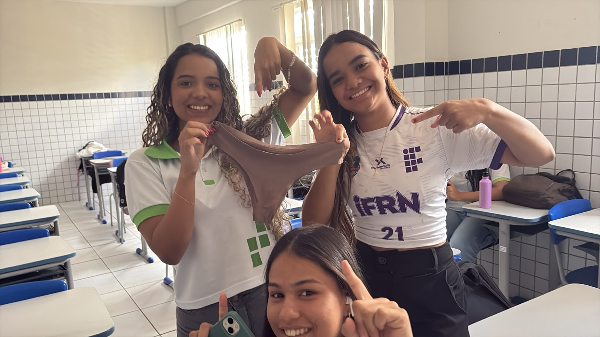
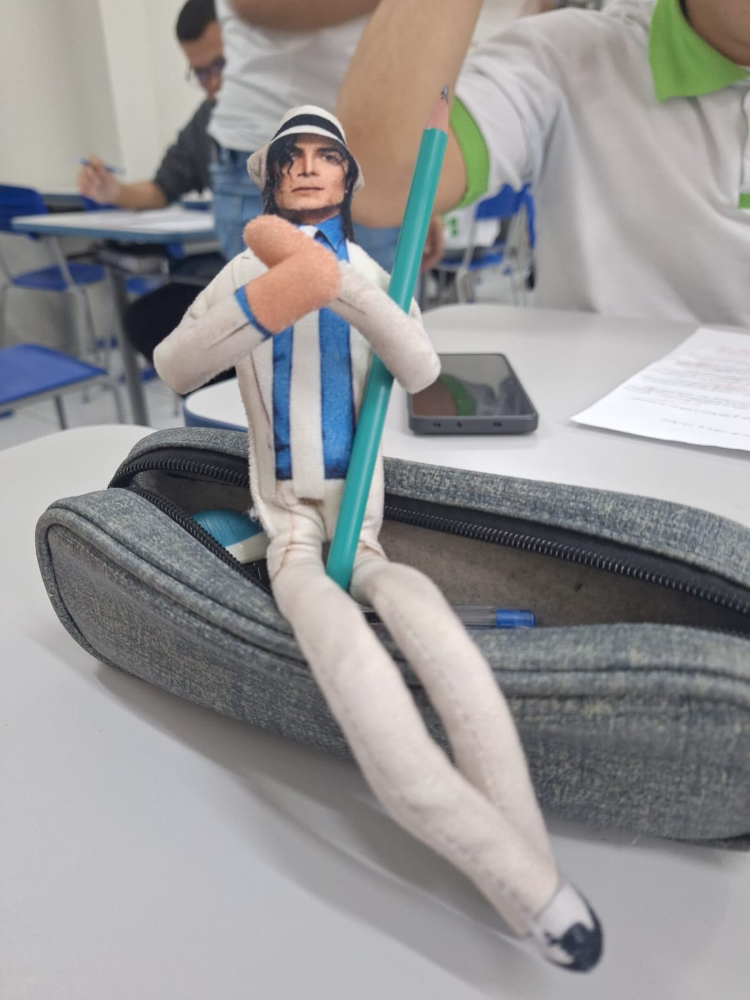
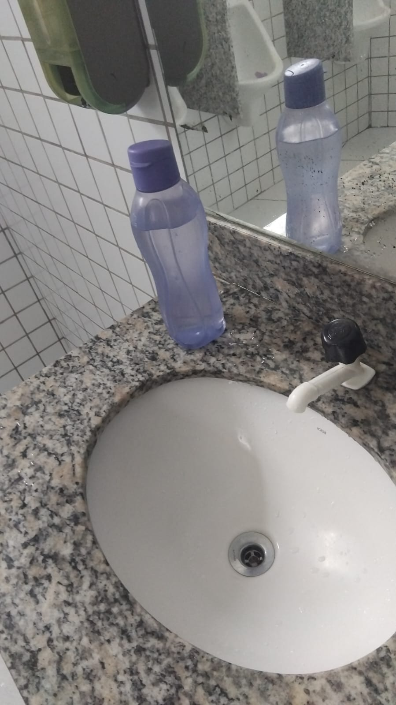
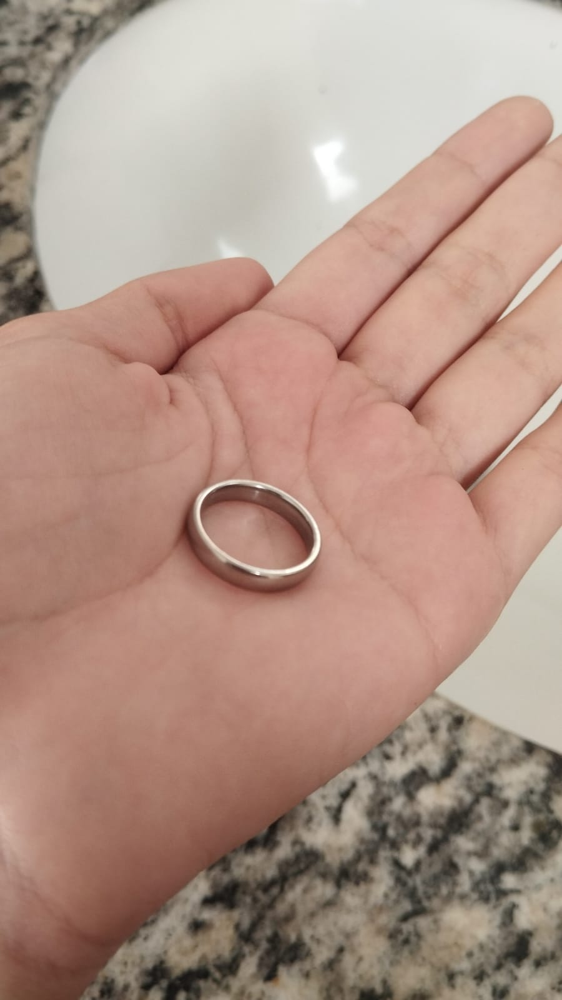

Encontrado
Um campus, muitas histórias
O que se perde
Role para conhecer
O que se perde
pode voltar para casa.
Achados e perdidos feitos por quem vive o campus. Encontre um aviso ou publique o seu em poucos minutos.
Fotos de demonstraçãoCada item tem
Cada item tem
uma história.
Uma seleção de imagens compartilhadas para mostrar como os avisos aparecem no mural.

EncontradoBoneco de pano

PerdidoGarrafa lilás

EncontradoAnel prateado
Simples e colaborativoTrês passos
Três passos
para um reencontro.
Na versão completa, qualquer pessoa pode publicar um item e combinar a devolução pelo WhatsApp.
Procure ou publique
Consulte os avisos ou cadastre um item perdido ou encontrado.
Conte o essencial
Inclua uma foto, o local e uma descrição que ajude a identificar o item.
Converse e combine
Fale pelo WhatsApp com uma mensagem pronta e combine a devolução.